Практичні курси · журнал «ДентАрт» 2014 №1 (74)
Інновації у сфері пародонтології. Частина I
INNOVATION IN PERIODONTOLOGY. PART I
Актуальність питання
Відомо, що патологія пародонту відображає функціональні порушення організму в цілому, а також може провокувати низку захворювань. Зважаючи на погіршення здоров'я людства через екологічні забруднення і нераціональне харчування, питання підвищення якості діагностики та лікування пародонтопатій стоїть особливо гостро.
Зміни слизової оболонки маргінальних ясен, пародонтальної зв'язки і кісткової структури альвеоли ведуть дослідника набагато далі, ніж банальне запалення або патологічна мікрофлора як причинний фактор.
Безліч праць присвячено питанням мікробіології ротової порожнини, і вона розглядається як украй негативний і агресивний фактор, який першочергово провокує виникнення патології зуба і м'яких тканин.2,3 Питання біоплівки вивчене більш ніж глибоко і детально.3 Проте при опитуваннях слухачів семінарів, які ми проводимо на базі 3М, виявлено: сучасні і, що важливо, дуже ерудовані стоматологи не мають загального чітко сформульованого бачення проблем патогенезу та лікування пародонтопатій. Виявилося, що лікарі вказують на необхідність призначення пацієнтам з пародонтопатіями антибіотиків, але не можуть обґрунтувати та індивідуалізувати призначення. Немає чіткого розуміння схем ведення цієї групи пацієнтів і передбачення віддалених результатів. У сучасного лікаря немає достатньої кількості часу на читання об'ємних видань, переважно присвячених теоретичним міркуванням. Лікарі, особливо стоматологічного профілю, потребують короткої, систематизованої і застосовної у клінічній практиці інформації, котра, ясна річ, спирається на глибокі знання теоретичних наук. Тому пропонована серія статей обіцяє стати прикладним мануальним керівництвом до вивчення практичними лікарями-стоматологами.
Розуміння етіопатогенезу захворювання — найкоротший шлях до правильного лікування!
Специфічні захворювання того чи іншого органа визначаються його структурою, метаболізмом і середовищем існування. У випадку з тканинами пародонту ми маємо справу з украй складною системою, що має неоднозначне середовище існування, адаптаційний тип метаболізму і ранжовану структуру.
Особливості будови тканин пародонту, які необхідно знати клініцистові
Зубощелепна система поліфункціональна за рахунок своїх елементів, що мають різну ступінь складності, у відповідності з якою займають місце в структурно-функціональній ієрархії. Як функціональний елемент будь-якого складного органа — спільноти гетерогенних структур, вони є морфологічним субстратом, що забезпечує поліфункціональність органів, тобто виконання кожним із них не лише однієї — специфічної, а й інших — неспецифічних функцій. Поліфункціональність зубощелепної системи дає можливість включення її в різні види системної діяльності. Цю концепцію розробив акад. О. М. Чорнух, який стверджує: функціональні елементи — це просторово орієнтований структурно-функціональний комплекс, що складається з клітинних і волокнистих утворень органа, об'єднаних загальною системою кровопостачання та іннервації. У кожному такому елементі розрізняють специфічну (робочу) частину, мікроциркуляторну одиницю і нервові утворення.1 Ми вважаємо за необхідне до цього переліку додати систему лімфо- і венозного відтоку, що в пародонтології є вирішальним фактором перебігу патологічного процесу, адже величезна кількість екзо- і ендотоксинів мікроорганізмів провокує хронізацію захворювання і утворює порочне коло патогенезу. У випадку зубощелепної системи зуб є робочою одиницею, а пародонт виконує всі інші функції (зауважимо, що у живленні зуба через апікальний отвір і додаткові канали, в зоні біфуркації зуба в тому числі, велику роль відіграє також пародонт, тому така важлива взаємодія лікаря-ендодонтиста і пародонтолога).
При цьому зуб переносить усе механічне навантаження на тканини пародонту, які є сполучною ланкою зуба і організму в цілому, виконуючи такі функції:
- опорну для зубощелепної системи (у тому числі для всіх м'язів голови і шиї);
- механічну (подрібнення їжі);
- фіксуючу (у мові як опора кінчика язика і як фіксатор в акті ковтання);
- одну з провідних у визначенні кровотоку сонних артерій, з огляду на анатомічне розташування (при зниженні висоти коронок зубів у бічних відділах щелеп спостерігається дисталізація нижньої щелепи, звуження сонних артерій і зниження артеріального тиску; при мезіальній оклюзії спостерігається зворотна картина).
Дуже важливо розуміти, що слизова пародонту — це частина слизової оболонки травного тракту (тому є відображенням функціонального стану травної системи і в той же час, будучи запаленою, провокує гіперреакцію запалення шлунка і кишківника). Структурно-функціональний стан тканин пародонту так само, як і будь-якої слизової оболонки, залежить від активності гормонального фону організму (рис. 1, 2).
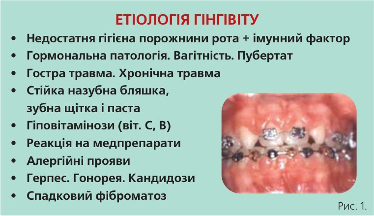
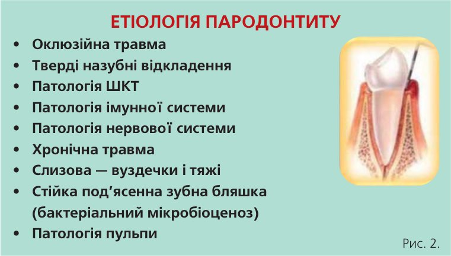
Як свідчить практика, бактеріальна мікрофлора є першопричиною захворювань тканин пародонту лише у 20% випадків, в основному мікроорганізми відіграють другорядну, поглиблюючу, але не причинну функцію. Адже якби мікроорганізми були справді стартовими у захворюванні слизової оболонки рота, тоді ополіскувачі та антисептичні розчини вже в першу-другу добу вирішували б поставлені завдання, але на практиці такого ми не зустрінемо. При цьому якщо в сім'ї є, наприклад, хворий генералізованим пародонтитом, усі інші її члени повинні також пройти курс лікування через наявність у гнійному ексудаті трихомонадної бактерії.
Настав час проаналізувати склад мікрофлори зубної бляшки в нормі, при гінгівіті і пародонтиті, а також визначити, на яку саме мікрофлору необхідно спрямовувати лікувальні процедури. Над- і під’ясенна мікрофлора різко відрізняється своїм складом (рис. 3).
Основний патогенний мікроорганізм, з яким доводиться боротися вже при гінгівітах, — С. gingivalis (рис. 4).
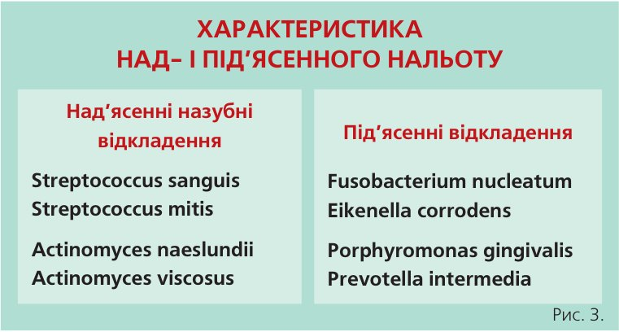
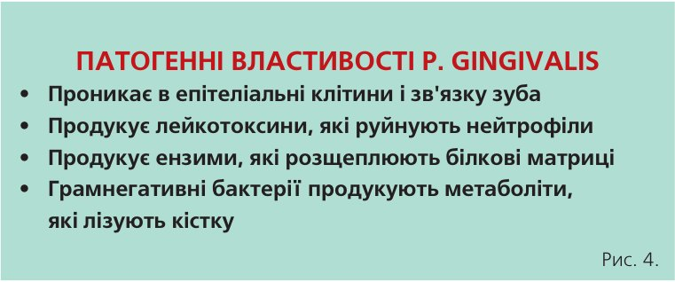
Говорячи про мікроциркуляторну функцію, слід зазначити, що при запаленні вона активізується і мікросудини починають активно і безперервно зростати, при цьому формується безліч незрілих судин запалення (рис. 5), які не мають серединної еластичної стінки, дуже звивисті й ламкі (що в клініці виявляється як кровоточивість ясен). Припливна ланка кровотоку збільшується, а вивідна — така як венозна мережа — не змінюється, що провокує утворення венозного застою, нагромадження метаболічних токсинів і позаклітинної рідини, як наслідок — набряк тканин, при якому клітини через те, що збільшується відстань між ними, втрачають інформаційний зв'язок, нервові волокна стискаються, що також порушує клітинну комунікацію і взаємодію. Процес переходить у хронічну фазу і є самопідтримуваним, що не дає можливості утворитися новій пародонтальній зв'язці, не сприяє оздоровленню та самоочищенню тканин пародонту.
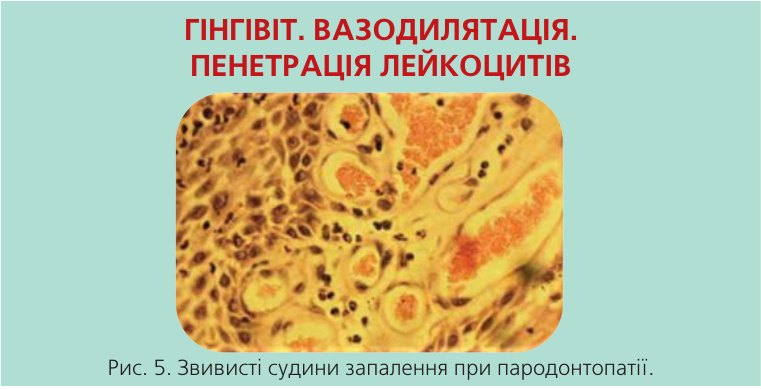
Зрозуміло, що такі судини не дозволяють сформуватися новій і здоровій пародонтальній зв'язці, тому патогенетичним лікуванням пародонтитів є висічення судин. Цю маніпуляцію можна провести інвазивними методиками — за допомогою кюрет, скейлера та апарата «Вектор». Оскільки ультразвукові методи профгігієни спрямовані швидше на тверді тканини зуба і видалення щільних зубних над- і під’ясенних відкладень, висічення судинних грануляцій за допомогою пародонтологічних кюрет є обов'язковим навіть при використанні щадної вектор-терапії. Однак цей метод неестетичний, часом болісний і може спричинити бактеріальне засівання.
На сьогодні існує інноваційний і досить привабливий метод профілактичної гігієни під’ясенної зони гліцином в апараті Ейр Флоу-Періо. Недолік цього методу — знижена вдвічі активність подачі повітря, що не дозволяє висікти судини запалення, і необхідність купувати додаткове обладнання.
Компанія 3M ЕСПЕ розробила унікальний наногліциновий порошок Клінпро Профі Поудер/Clinpro Prophy Powder для наконечника ЕйрФлоу стандартної стоматологічної установки, який, не вимагаючи додаткових фінансових вливань, з легкістю висікає патологічні судини запалення (що примітно, він прибирає тільки запалені судини, а здорові не зачіпає — це можна перевірити, проводячи ЕйрФлоу обробку запаленої і здорової слизової оболонки маргінальних ясен: при роботі з патологією запалення спостерігається «облямівка чистої крові» навколо зуба (фото 1), в нормі кровоточивості після профгігієни немає), є живильним середовищем для нової слизової оболонки і протизапальним елементом.

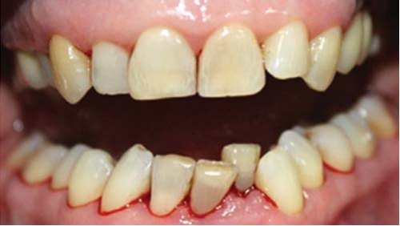
Фото 1 а, б. Пацієнтка Н. до і після профгігієни ЕйрФлоу з Клінпро Профі Поудер. У цьому випадку кюретаж не застосовувався.
Унікальність гліцину в тому, що це найпростіша аліфатична амінокислота — єдина амінокислота, яка не має оптичних ізомерів. Вона входить до складу багатьох білків і біологічно активних сполук. Дуже важливо, що з гліцину в живих клітинах синтезуються порфірини і пуринові основи (їх кількість зменшується з віком і провокує старіння організму). Гліцин — важлива нейромедіаторна амінокислота, яка знімає м'язовий гіпертонус і «розслабляє» нервові закінчення (за рахунок чого знижує чутливість у зоні дентинових трубочок і може застосовуватися як елемент зняття гіперестезії до, під час і після профгігієни). Ця амінокислота є регулятором обміну речовин і має антитоксичну дію, регулює діяльність глутаматних рецепторів, за рахунок чого зменшує вегетосудинні розлади (що набуває базового значення у профілактиці та лікуванні пародонтопатій). Важливо, що гліцин зменшує обмінні розлади при ішемії тканин, особливо нервової, знижує потяг до солодощів, легко метаболізується до води і вуглекислого газу, не нагромаджуючись в організмі.
Препарат чудово зарекомендував себе у клінічних випробуваннях при переімплантитах, особливо у випадку розміщення свища поза кістковою тканиною, коли оперативні методи неприйнятні з огляду на небажане післяопераційне рубцювання слизової оболонки. Уже через добу після «продування» свищового ходу Клінпро Профі Поудер відзначали відсутність свищового ходу, утворення на його місці фіброзної тканини, при цьому рівень маргінальних ясен не змінювався. Пацієнтів спостерігали протягом 6 місяців, рецидиви були відсутні у 98% випадків у групі дослідження (фото 2). Випадки рецидивів через 7 днів зустрічалися в контрольній групі, де застосовували стандартні методики без використання Клінпро Профі Поудер (78%), у групі дослідження — у 2% випадків (обтяжливим фактором виступала загальносоматична патологія та оклюзійне перевантаження імплантата).
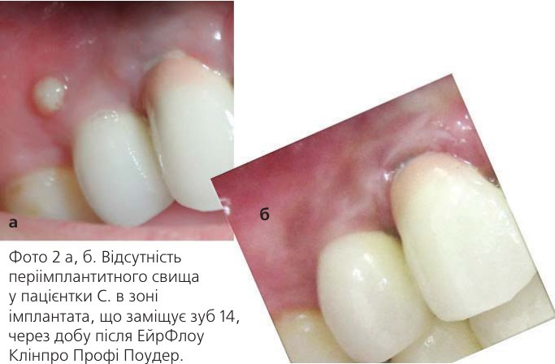
Позитивними властивостями Клінпро Профі Поудер є повна безболісність процедури, солодкий « заспокійливий» смак, ультрадрібна дисперсність і атравматичність навіть для незрілої емалі тимчасових зубів, і це дозволяє застосовувати його в дитячій стоматології (що буде детально описано в частині 2).
Незважаючи на ці позитивні якості, Клінпро Профі Поудер не усуває пігментацію зубів, що може ввести в оману лікарів, які звикли до стандартних методів ЕйрФлоу із содовмісними порошками. Слід зазначити, що у Клінпро Профі Поудер принципово інші завдання й місце робочого поля. Так, правильним буде його використання шляхом спрямування водно-повітряно-гліцинового струменя перпендикулярно до шийки зуба по маргінальному краю ясен, дозволяючи струменю розподілитися на два потоки: перший входить у пародонтальну кишеню, а відтак шліфує тканини зуба, запечатуючи відкриті дентинні трубочки і седатуючи подразнені нервові закінчення, висікає патологічні судини запалення; другий струмінь шліфує шийку зуба в над’ясенній зоні, запечатуючи відкриті дентинні трубочки і седатуючи подразнені нервові закінчення (рис. 6).
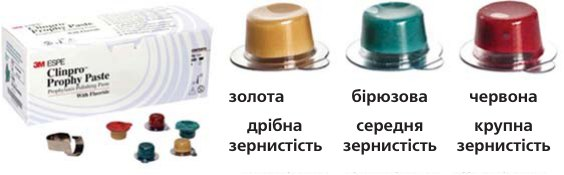
Ці пасти складаються з вулканічної породи, тому рекомендовані для зняття пігментованих назубних відкладень при езофагальному рефлюксі (відкладення коричнево-чорного кольору дуже важко видаляються стандартними пастами), оскільки цей наліт утворений жовчними пігментами, які мають ліпідну структуру і у водному середовищі високоадгезивні. Пасти Клінпро Профі Паст сухі, мають різну дисперсність, тому з ними легко і продуктивно працювати у цьому випадку (детально ці аспекти будуть висвітлені у другій частині з поданням клінічних випадків).
Говорячи про пародонтологію, пам'ятай ендодонтію!
Працюючи з тканинами пародонту, слід пам'ятати про їх тісний взаємозв'язок з пульпою зуба через пульпоперіодонтальні канали і додаткові канали (рис. 7).
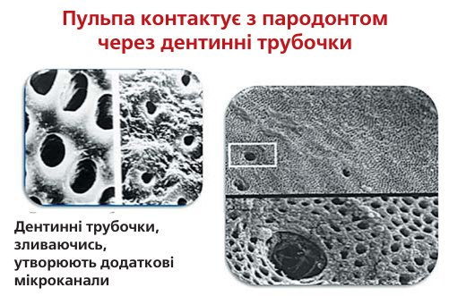
Важливим залишається питання, в яких випадках варто депульпувати інтактний зуб і хто із спеціалістів має першим узятися за лікування — пародонтолог чи ендодонтист. На це питання існує одна проста відповідь: зважаючи на те, що при наявності запалення в тканинах пародонту розширюється пародонтальна щілина і утворюється шлях відтоку серозного і гнійного вмісту кореневої частини зубощелепної системи, першим своє лікування повинен провести лікар-пародонтолог, і лише при появі свищових утворень після проведеного лікування та за відсутності ознак запалення в тканинах пародонту виникає необхідність депульпувати зуб через наявність запалення в пульпі і відсутність відтоку ексудату.
Вроджена патологія тканин пародонту
Не слід забувати, що вроджені короткі вуздечки і додаткові тяжі можуть провокувати запальний процес у маргінальній слизовій оболонці (фото 3). При цьому необхідні рання діагностика та оперативне лікування, що детально обговорюватиметься у другій частині.
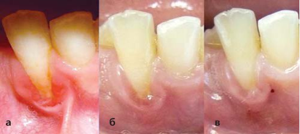
Оклюзійна травма як дуже важливий фактор пародонтопатій
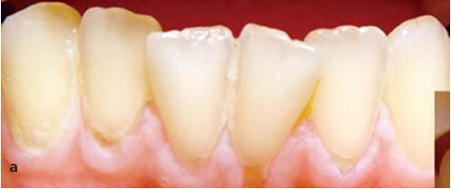
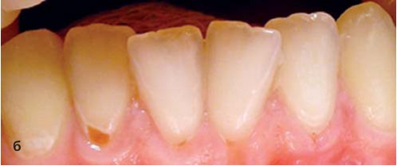
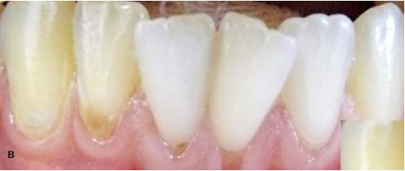
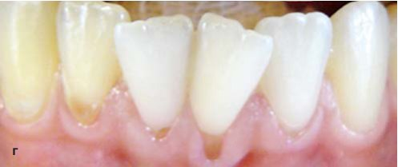
Фото 4 а, б, в, г. Пацієнтка Л. зі скупченістю зубів у фронтальній ділянці нижньої щелепи, дрібним переддвер’ям ротової порожнини і множинними рецесіями. Стан через 8 років після оперативного втручання без ортодонтичного лікування (цьому питанню присвячена третя частина публікації).
Авторські схеми профілактики, які з кожним днем аналізуються й удосконалюються на базі Інноваційного Центру «Здоровий-Лідер.РУ»
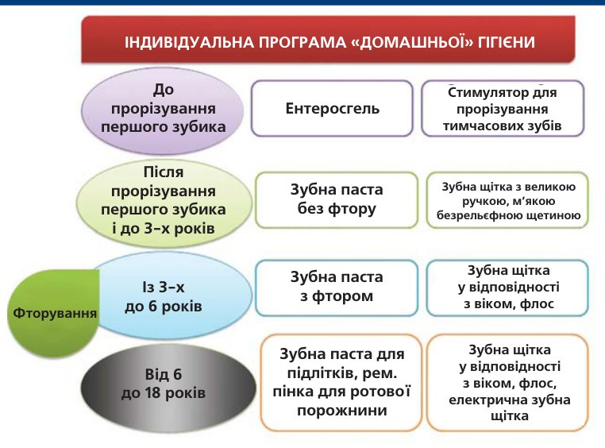
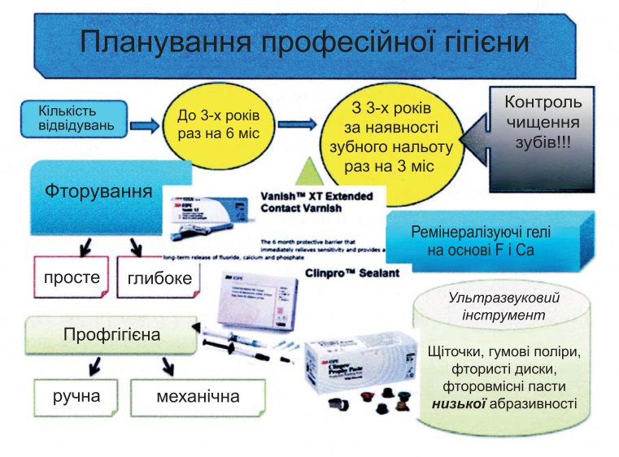
Авторська методика лікування пародонтопатій *
- Ліквідація усіх причинних факторів
- Професійна гігієна, кюретаж кишень понад 6 мм, введення холісал-гелю у пародонтальні кишені Clinpro™ Prophy Paste, Clinpro™ Prophy Powder Varnish
- Вектор-терапія (обидві щелепи протягом доби, курси не частіше разу на 3 міс) Clinpro™ Prophy Varnish ХТ
- Мукозотерапія (мукоза хеель по 0,1 мл під слизову оболонку, 5 процедур через день)
- Остеохеель по 1 таб +3 гранули насіння льону за 30 хв до їди, запити молоком, 3 рази на день 1 міс раз на 6 міс.
- Полоскання (насіння льону, листя кропиви, ромашка, шавлія + хлорофіліпт спиртовий)
- Безрельєфна зубна щітка (РОКС, КУРАПРОКС), міжзубні йоржики
- Ранок — зубна паста відбілювальна, вечір — дубильна + протизапальна
* Детальніше буде розкрита у третій частині.
Завершуючи першу частину нашої подорожі у світ інновацій пародонтології, можна зробити висновок:
Пародонт — багатогранна і дуже цікава зона нашого організму, вона вимагає глибокого вивчення і прискіпливого ставлення до себе!
Далі буде...
Література
- Дмитриева Л.Ф. Пародонтит. —М.: МЕДпресс-информ, 2007. – 504 с.
- Ламонт Р.Дж. Микробиология и иммунология для стоматологов [пер. с англ.]/ Под ред. Леонтьева В.К. – М.: Практическая медицина, 2010. – 504 с.
- Леус П. А. Микробный биофильм на зубах. Физиологическая роль и патогенетическое значение.—М.: Издательский Дом «STBOOK», 2008.—88 с.